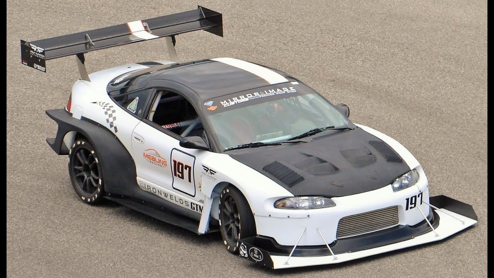

Controlled Drag
Induced drag occurs when a lift or downforce causes drag. It is a common source of drag on a race car. It is a high-payoff modification to focus on reducing it. At the same time, downforce can make the car faster. This calls for a compromise.
Keep the Balance
Without getting too technical, the aerodynamic downforce on the axles affects the balance of the car. As the car goes faster, this aerodynamic force affects its ability to take high-speed corners.
Downforce improvement should be done to both the rear and front of the vehicle to balance out the changes. If the ratio is even, the force will be even. If it is not even, you might find it harder to manage the vehicle at high speeds.
Andrew Brilliant's Mitsubishi Eclipse project

Andrew Brilliant started his carreer messing around on CFD softwares, and eventually worked his way up to be the manager of a race team. One of his projects that was a sucess was his Mitsubishi Eclipse project. In an interview, with Speedhunters, Andrew told them a story from his testing his first generation body, of his project.
We just finished installing the first generation of the body and I took the car for a test drive. There was an off-ramp near my house: a 180 degree sweeper rated at 45mph. I thought I’d see how fast it could go there. I did it at 120mph and it didn’t feel difficult! I think I parked the car and flipped out. It could slalom the dots between freeway lanes and sunk down 25mm when you got up to speed. I knew I was going to get into a heap of trouble though, so I took the license plate off and that was the end of the street car days.